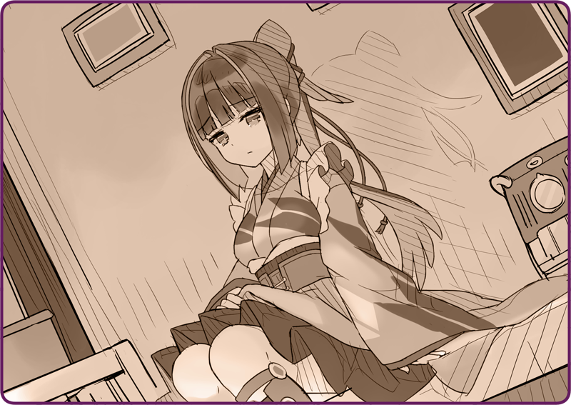

それは、黒猫亭が開店するより、すこし前のこと。
鴉羽が、はじめてその名を与えられた物語――。
＊ ＊ ＊
星の落ちる音がする。
それはパラパラと儚い音色だ。まるで麻紙で金平糖を受け止めたかのような、寂しげな風情。終わりの瞬間というのはこんなものかと思った。空一面を埋め尽くした流星群。いや、あれは誘導弾だ。十字翼が不吉に手を広げ、液体燃料が悲鳴と共に煙を上げている。やがて全てが白い光に包まれる。そこはなんの音も、色もない世界――。
＊ ＊ ＊
どさりという音と共に、あたしは目覚めた。
辺りは白く輝いていた。瞳に閃光が灼きついたままなのだと思った。それが雪明かりが反射しているせいなのだと知ったのは、しばらくしてからだった。
作業台の上に寝かされていた。ご丁寧に毛布までかけられている。

ゆっくりと各部の動作を確認しながら体を起こす。起き上がろうとして、手足が脆く砕け散ったとしても不思議ではない。
しかし、警戒心に反して、あっさりとブーツは床を踏んだ。木の床材が微かに軋んだ音を立てる。耳の方も正常に動作しているようだ。
そっと窓辺に立つ。夜明けだろうか、白銀が暁光を煌めかせている。時折、もみの木に積もった雪がパラパラと落ちてきたかと思うと、大きく枝が跳ねて、どさどさと滑り落ちてくる。先程聞いた音はこれだったのかと合点した。
？？「おはよう、鴉羽」
声が響いた。違和感を抱えながらも、ゆっくりとそちらを向く。
士官「調子はどうだい」
端正な顔立ちの士官が、茶目っ気のある微笑みを浮かべていた。目蓋にかかる長い髪。華奢な体を覆った、薄墨色の軍服。手にはメッキが施されたビーカー。
士官「まあまあ、目覚めのピーナッツ油でも飲みなよ。とびきり濃厚なやつにしておいたからね」
半ば押しつけられた燃料を、差し込まれたストローでゆっくりと飲み込む。
士官「大丈夫、キミの体はすっかり直ったよ。３８３連隊は大変だったね……いまはゆっくりと休むといい」
士官「なんだい、鴉羽」
低い声を上げた。ずっと抱えていた違和感を口にせざるを得ない。
士官「うん、それがだね」
あたしの指摘に、肩をすくめてみせる。
士官「出来るだけキミの体にあう部品を探したんだが、どうしても復元しきれなくてね。まあ、見てくれよ」
胸元から小さな手鏡を取り出すと、そっと向けてくる。
黒い。まるでカラスのように。わずかに青みがかった艶やかな黒髪。かつての姿とは似ても似つかない……。
士官「言うならば、キミは生まれ変わったのさ。だから名前も変えたほうがいいかと思って。ずいぶん悩んだんだけど、やっと思いついたんだ」
あたしの気持ちにはまったく気付いていない様子で、なにやらうんうん頷いている。
士官「鴉羽って名前はどうかな？」
心から満足した様子で……あたしが、心から満足するとでも言いたげに、自信満々に微笑んだ。
士官「えっ」
士官「いや、でも我ながらよく出来たと思うんだよ！？ この物資の乏しい中、よくぞこんな美しい人形を作り上げられたと……！ 前はガリガリだったけど、胸だって結構ふくよかになったし……！」
士官「このバストサイズならローベリアに遅れを取ることはあるまい」
士官「足もこう、非常に健康的なラインになった」
士官「いつの時代も、女性らしさは素敵なものさ」
士官「ああ、そういえば言ってなかったね」
ぽんぽん、とあたし……鴉羽の肩を叩いて、その人は微笑んだ。
士官「ボクは遠間ナギ。人形師さ。いまは軍属だから……まあ、技術士官ってところかな。この保養所にいる間は、キミのマスターになるわけだ」
士官「キミを修理するのがボクの役目さ。よろしく頼むよ、鴉羽」
どこか悪戯っぽい笑みを浮かべて、ぱちりと片目をつぶった。

 （……人形に、こんな気遣いはいらないのに）
（……人形に、こんな気遣いはいらないのに）